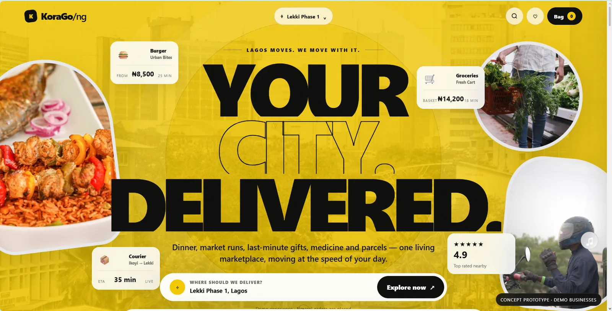
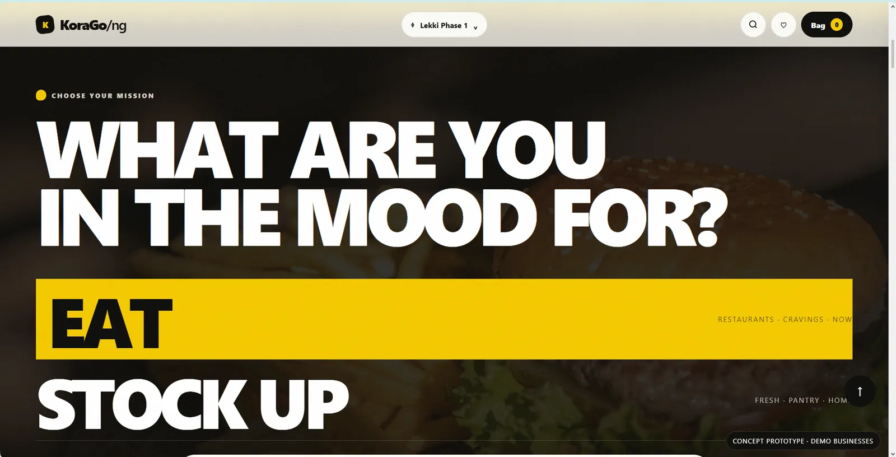
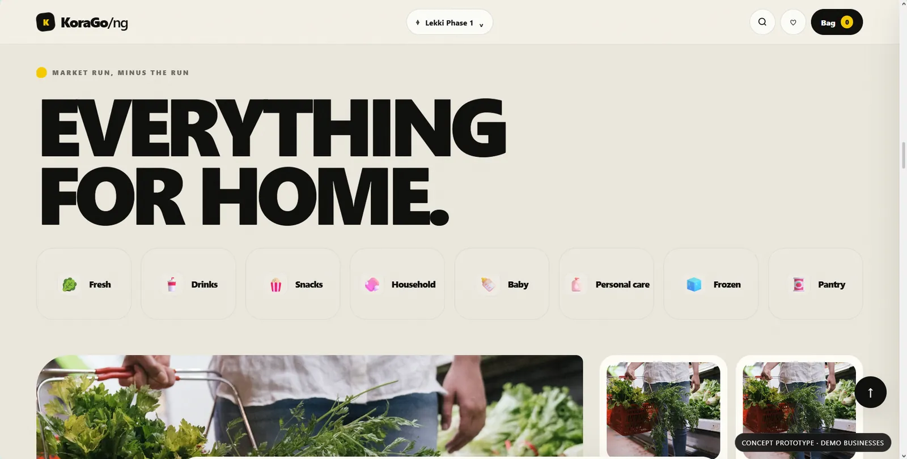
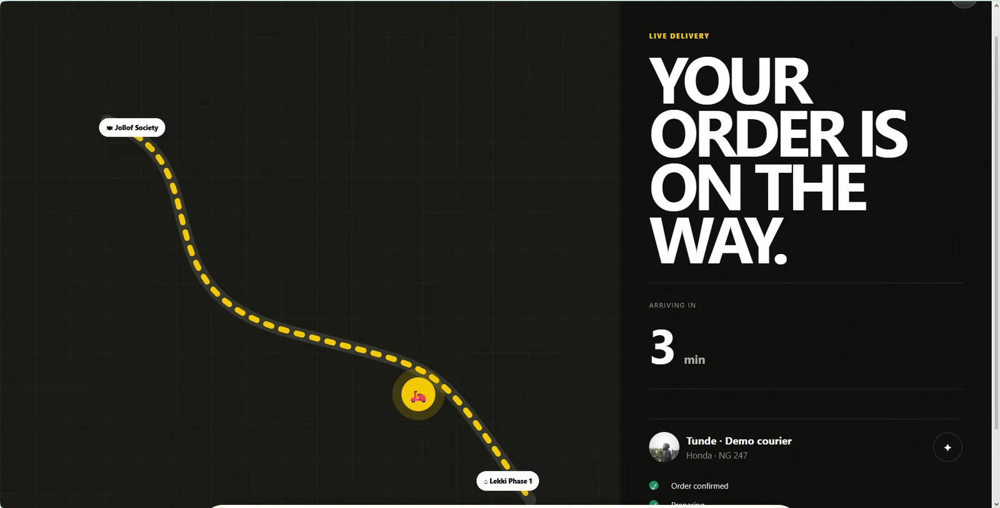
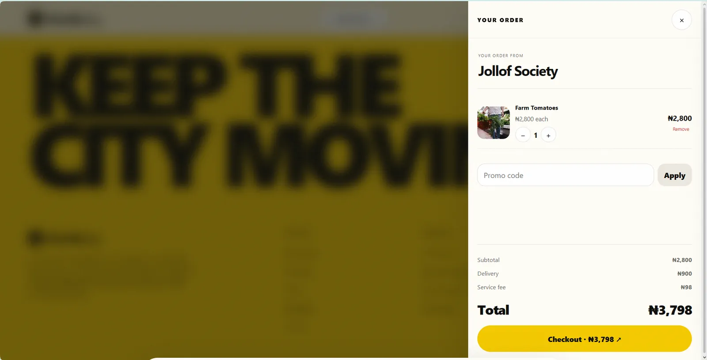

ONE CITY, MANY JOBS
Food, groceries, retail and courier actions need one coherent discovery language.


Turn several city errands into one coherent marketplace experience without making the product feel like unrelated service tabs.
A shared discovery, search, bag and checkout language keeps food, grocery, retail and courier flows inside one product system.
The visual rhythm follows a city errand: discover what is nearby, choose the job, commit to a route and move toward delivery.
Discovery, choice and delivery are treated as one continuous city task rather than disconnected commerce screens.



This section reads the supplied artifacts as product evidence: what the interface has to keep understandable, connected or constrained.
Food, groceries, retail and courier actions need one coherent discovery language.
Search, product discovery, bag and checkout behave as parts of one marketplace rather than separate microsites.
The interface uses a Lagos-facing marketplace context instead of generic location-free commerce.
Five supplied views document the concept and the source repository is linked from the record.
A compact contact sheet keeps the page readable; select any frame to inspect it at full size.